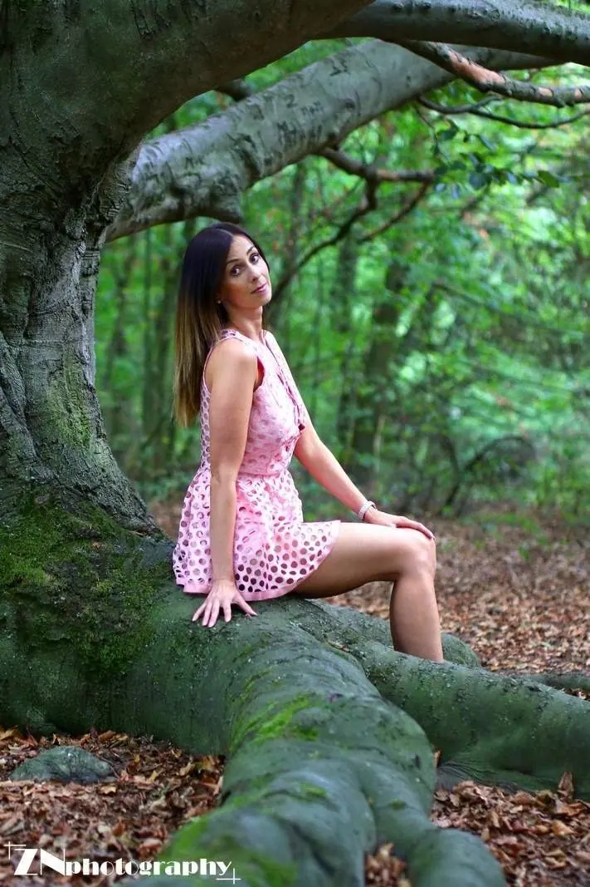
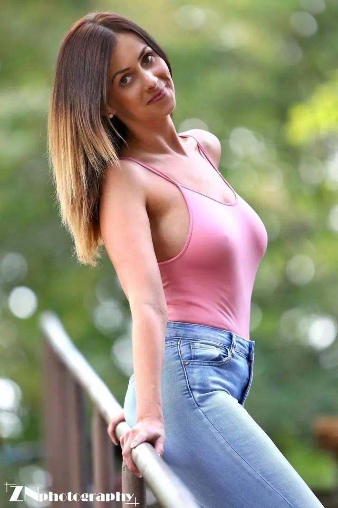
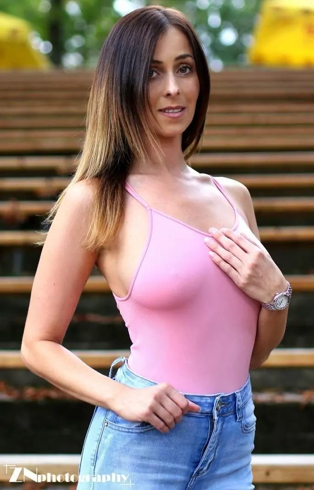
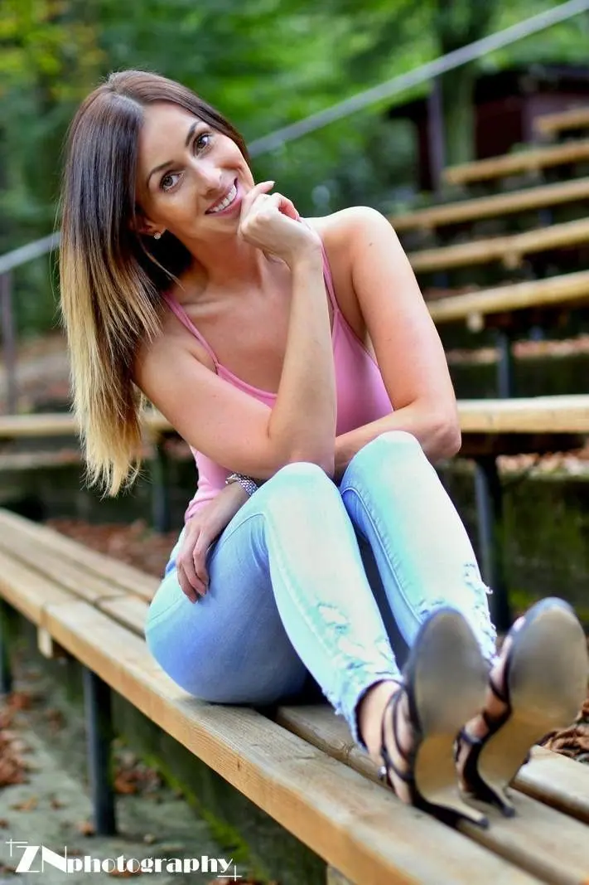
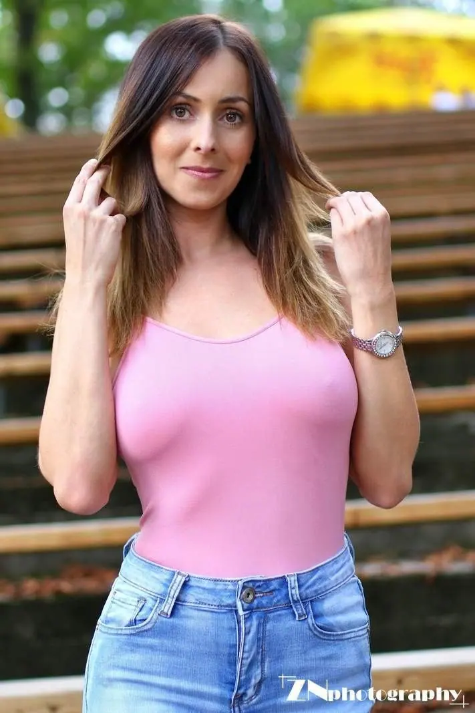
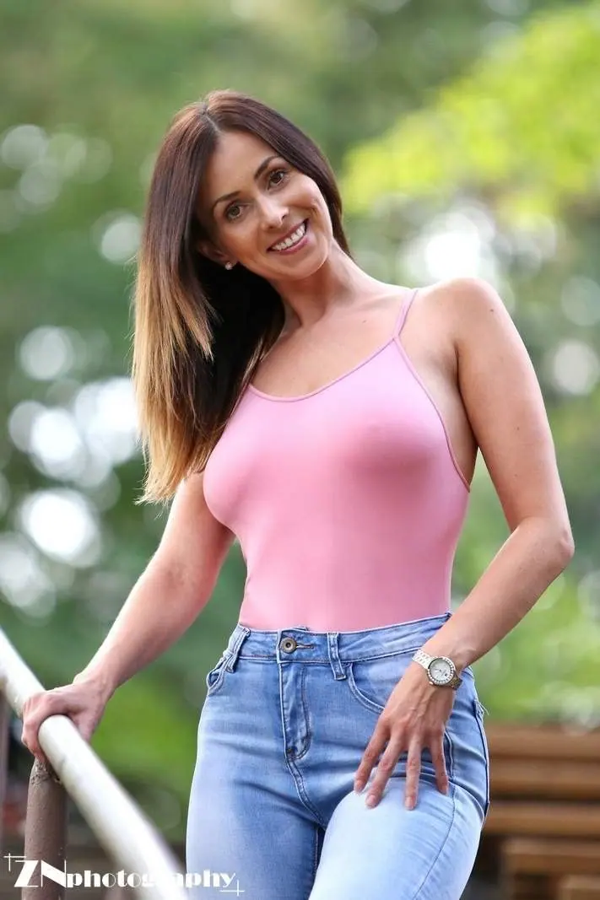
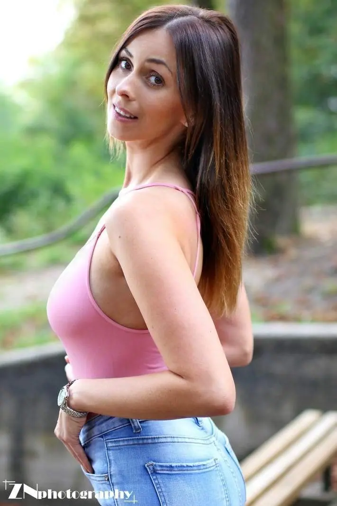
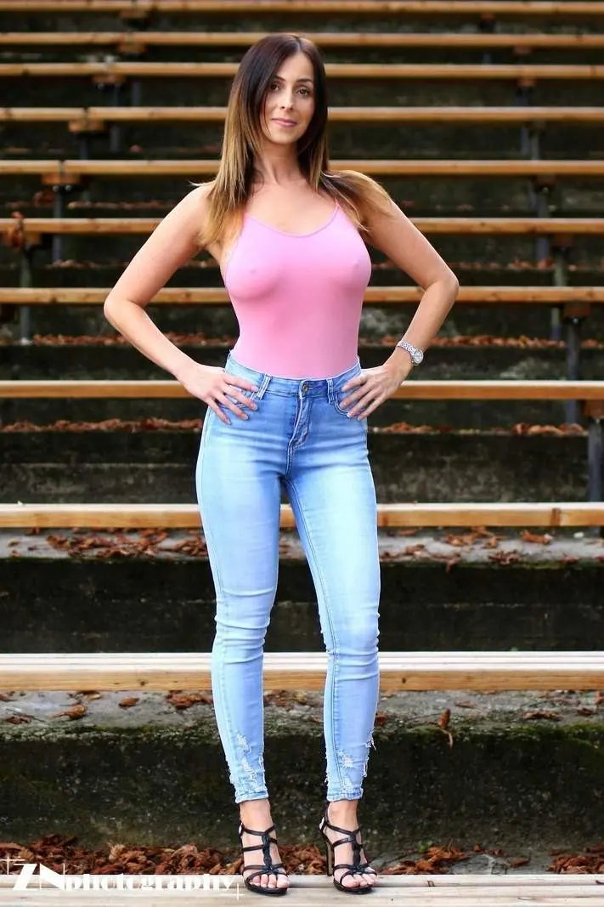
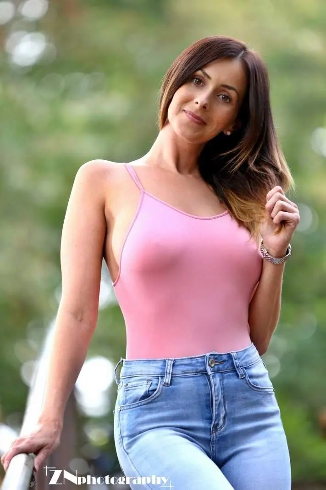

01 / 03
Portréty v plenéru
Kouzlo portrétní fotografie teprve objevuji a moc mě baví. Fotím formou TFP, nejčastěji venku v parcích a v lese na Pardubicku a Chrudimsku.
Zeptat se na termín→








Portréty venku na Pardubicku
Zeptat se na termín →(01) Ahoj
Jmenuji se Zbyněk Novotný a focení se věnuji už delší dobu. Začínal jsem u reportáže , později přibyl sport a teď objevuji kouzlo portrétu v parcích a v lese na Pardubicku a Chrudimsku.
(02) Co fotím
01 / 03
Kouzlo portrétní fotografie teprve objevuji a moc mě baví. Fotím formou TFP, nejčastěji venku v parcích a v lese na Pardubicku a Chrudimsku.
Zeptat se na termín→(04) Postup
Od první zprávy po hotovou galerii.
Krok 1 z 4
Ozvěte se mi přes Instagram nebo e-mailem a napište pár slov o tom, jaké focení by Vás lákalo.
Krok 2 z 4
Společně domluvíme styl, oblečení a místo. Nejčastěji fotím venku na Pardubicku a Chrudimsku.
Krok 3 z 4
Fotíme v klidu a bez spěchu. Poradím Vám s pózami, takže nepotřebujete žádné zkušenosti před objektivem.
Krok 4 z 4
Vyberu nejlepší snímky, upravím je a pošlu Vám je. Na TFP focení tak získáme fotky oba.
Portrét, sport i reportáž, vždy naplno
(05) Za objektivem
Vítám Vás na mém webu. K fotografii jsem se dostal přes reportáž, která mě drží dodnes. Postupem času jsem začal objevovat další žánry a jedním z nich se stala sportovní fotografie.
Poslední dobou mě nejvíc baví portréty. V tomhle žánru teprve začínám, a proto fotím formou TFP. Hledám lidi, kteří mají chuť něco společně vymyslet, a místo ateliéru volím nejraději přírodu, staré lavice, zábradlí nebo stín pod stromy.
Fotím hlavně na Pardubicku a Chrudimsku, ale všechno se dá nějak domluvit. Do budoucna mě láká i něco odvážnějšího, třeba glamour, který bych si rád vyzkoušel.
Zbyněk
Zbyněk Novotný · Portrétní a reportážní fotograf
Nefotíme za peníze, ale za fotky. Vy získáte upravené portréty a já nové snímky do portfolia.
Především na Pardubicku a Chrudimsku, nejraději venku v parcích a v lese. Jiné místo se dá ale domluvit.
Nemusíte. Portréty sám teprve objevuji, takže se do toho můžeme pustit společně a v klidu.
Pokud máte Instagram, napište mi tam na @zn_photo_pce. Jinak mě najdete na e-mailu znphoto@seznam.cz.
(07) Kontakt
Napište pár vět o tom, co si představujete, a termín, který se vám hodí.
znphoto@seznam.cz